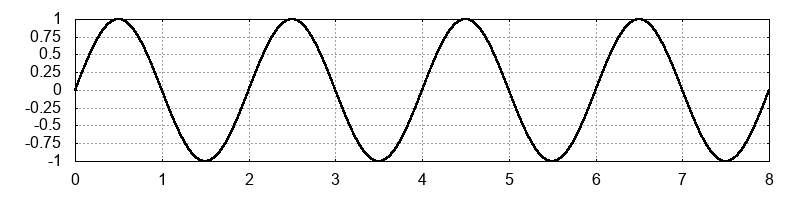

<section class="container-content">
    <div class="d-flex flex-column justify-content-around etapa1-texto">
        <div>
            <h5>Exercício 2</h5>
            <p>Quantos cíclos completos a senoide abaixo possui?</p>
        </div>
        <div>
            
        </div>
    </div>
    <div class="pt-4 etapa1-grid-notas d-flex flex-wrap justify-content-around align-items-center">
        <div class="etapa1-notas odarre" onclick="odarre(conteudo_etapa7.etapa7Conteudo27, 7, 29)" role="button">1</div>
        <div class="etapa1-notas odarre" onclick="odarre(conteudo_etapa7.etapa7Conteudo27, 7, 29)" role="button">2</div>
        <div class="etapa1-notas otrec" onclick="otrec(conteudo_etapa7.etapa7Conteudo27, 7, 29)" role="button">4</div>
        <div class="etapa1-notas odarre" onclick="odarre(conteudo_etapa7.etapa7Conteudo27, 7, 29)" role="button">6</div>
        <div class="etapa1-notas odarre" onclick="odarre(conteudo_etapa7.etapa7Conteudo27, 7, 29)" role="button">8</div>
    </div>
    <div class="mensagem" id="mensagem"></div>
</section>